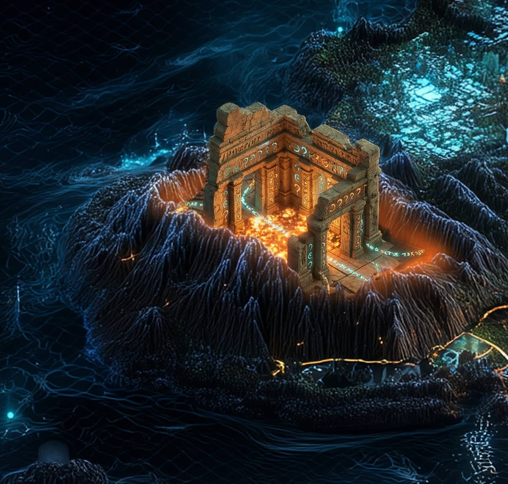

Record // MEME PLAYABLE TEARDOWN
DEGEN LAUNCHPAD

Launch a token in 30 seconds for almost nothing. Solana's meme floodgates never closed again.
▶ Play this teardown — operate the mechanism yourself →What happened
Pump.fun collapsed the cost of launching a token to almost zero: every coin starts with a fixed one-billion supply sold along a bonding curve — an automated pricing formula with no presale and no order book — and, once the curve sells out, 'graduates' to an open DEX (historically Raydium at around a $69K market cap, later Pump.fun's own PumpSwap). The frictionless machine made meme launches a constant, high-volume cultural activity — and wrote its own turbulent history: in May 2024 a former employee abused leftover privileged access to drain about $1.9M (roughly 12,300 SOL) from bonding-curve contracts and was later sentenced in London to six years, per press reports; in December 2024 the UK's FCA issued an unauthorized-firm warning, after which Pump.fun itself blocked UK users; and in July 2025 its PUMP token sale raised $600M in minutes, widely reported as one of the largest ICOs ever.
Why Solana remembers it
A major product and culture moment with real speculation and risk attached — the bonding-curve launchpad became a category, and its incidents became case studies in platform custody and regulatory reach. It is history, treated neutrally: neither the mechanism nor the token is an endorsement.
On the map
A launchpad firing off tokens like flares.
Evidence · sources last verified 2026-07
Historical reference only. No endorsement or investment implication.